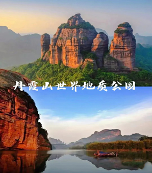
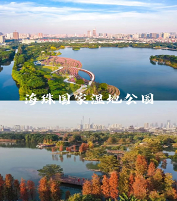
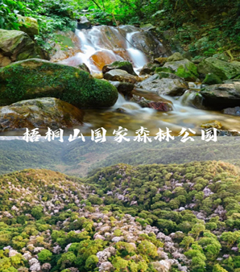
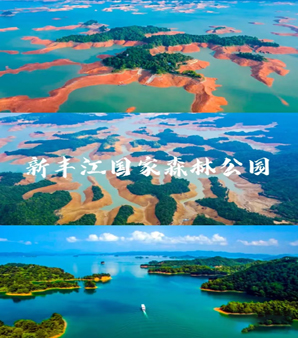
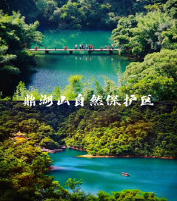
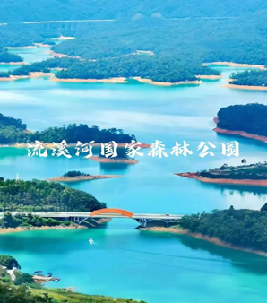
南海水域，蓬岛瑶池
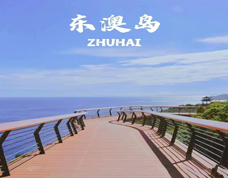
东澳岛位于珠海万山群岛中部，植被丰富，沙滩众多，充满了自然古朴的热带海岛风情。你还可以爬上斧担山蜜月阁登高望远，游览建于清朝乾隆年间的古堡铳城，或是在岛上品尝新鲜地道的海鲜。
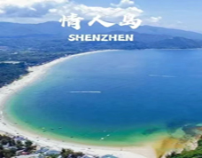
1997年情人岛与朱家尖架起了一座122米的悬索桥，从此可不再候潮游览。游人行走在悬索桥上，桥下潮流滚滚，很是一番景致。情人岛面积虽然小，只有0.2平方公里，但她却以小巧玲珑和海山奇观展示着自己独特的美。
那琴半岛地质海洋公园位于台山市北陡镇南部海湾上，海岸线绵长，海滩上怪石嶙峋，景色十分奇特。
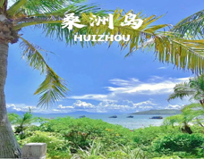
桑洲岛位于巽寮镇西南部，是一个原生态的海岛，驾车可导航至桑洲岛停车场，然后乘船前往桑洲岛，岛上绿树成荫，是有名的浮潜胜地。
美轮美奂，烟波浩渺
 如果你厌倦了大小梅沙
那么这个宝藏小众沙滩或许是你的不错选择。洁白的沙子、唯美的日落深圳沙滩的基本操作它都有但除此之外，海边秋千清澈纯净的玻璃海、环海栈道为其增添独特的美
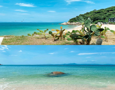
柚柑湾，坐落在深圳第二高峰七娘山下，沙滩山环水抱，环境清幽，堪称真正的“世外桃源”，绝对的人少景美。 典景点之一，省级文明单位、湖南百景单位、潇湘八景之一、长沙“山、水、洲、城”旅游格局的核心要素。
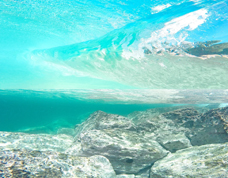
就算浪花抚过沙滩后，大海也宛如一块晶莹剔透的玻璃，就连水中的一块小石子，也逃不过你的眼睛。
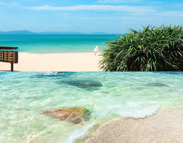
波光粼粼的海面如同一块“蓝玻璃”，在沙滩上的镜子前看海的倒影，蔚蓝的大海反倒更加迷人。
如果你厌倦了大小梅沙
那么这个宝藏小众沙滩或许是你的不错选择。洁白的沙子、唯美的日落深圳沙滩的基本操作它都有但除此之外，海边秋千清澈纯净的玻璃海、环海栈道为其增添独特的美
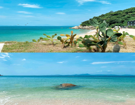
柚柑湾，坐落在深圳第二高峰七娘山下，沙滩山环水抱，环境清幽，堪称真正的“世外桃源”，绝对的人少景美。 典景点之一，省级文明单位、湖南百景单位、潇湘八景之一、长沙“山、水、洲、城”旅游格局的核心要素。
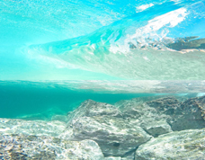
就算浪花抚过沙滩后，大海也宛如一块晶莹剔透的玻璃，就连水中的一块小石子，也逃不过你的眼睛。
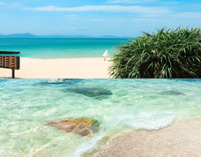
波光粼粼的海面如同一块“蓝玻璃”，在沙滩上的镜子前看海的倒影，蔚蓝的大海反倒更加迷人。